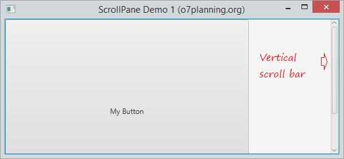
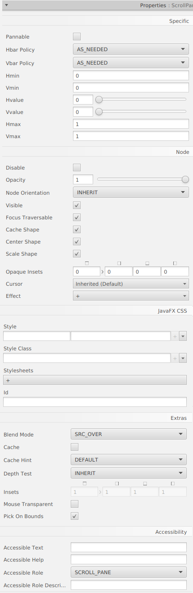

ScrollPane és un component desplaçable que s’utilitza per a mostrar un gran contingut en un espai limitat. Conté barres de desplaçament horitzontal i vertical.

Pot configurar la política de visualització per a la barra de desplaçament:

back